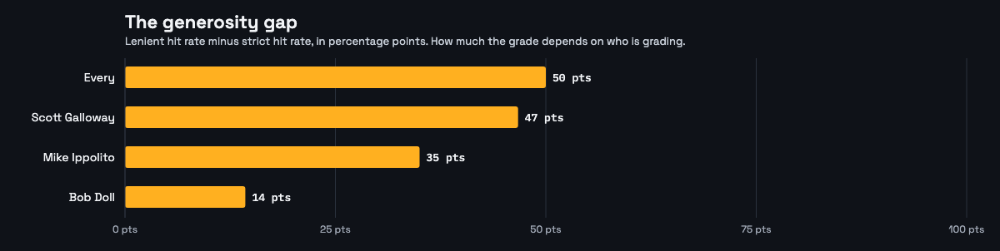
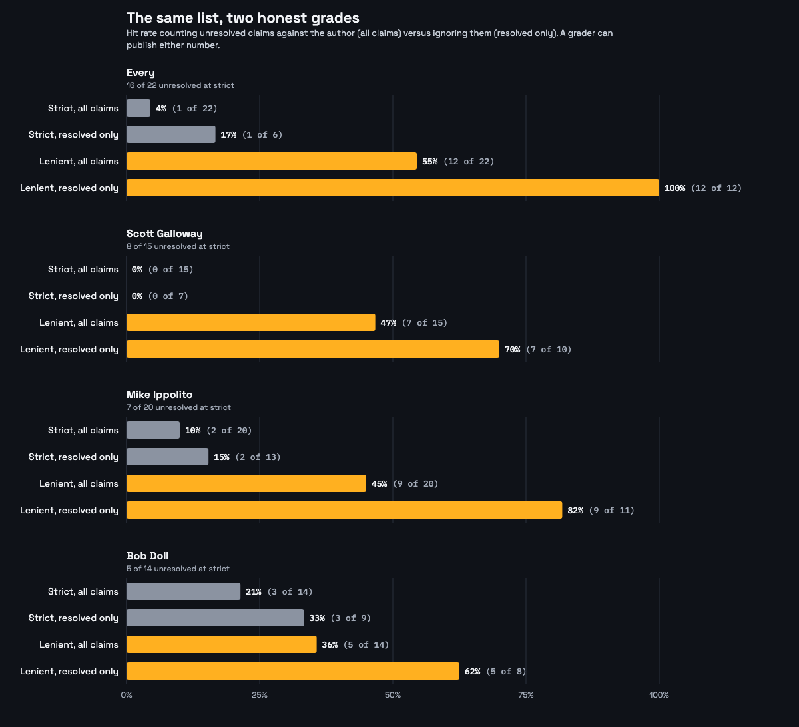
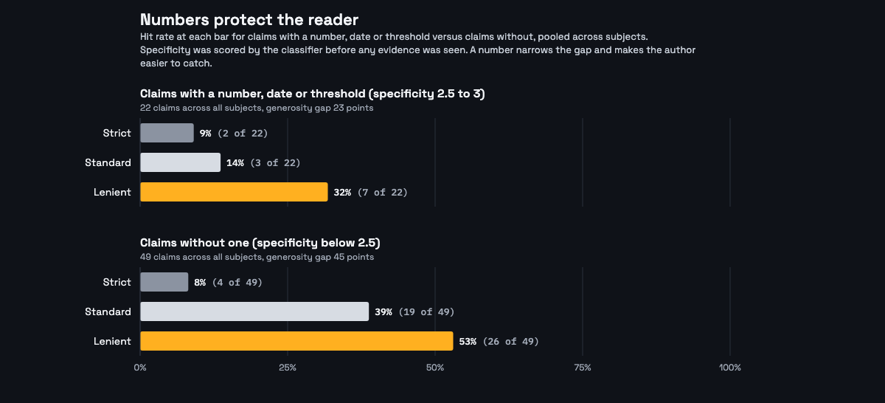
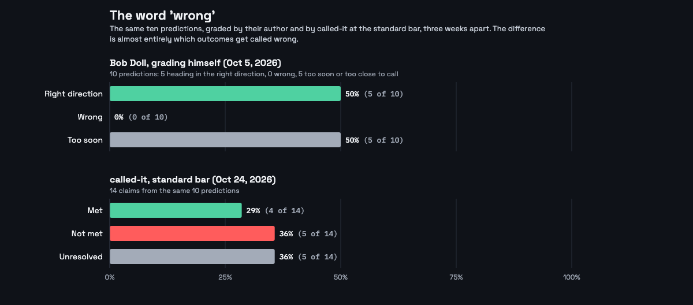

Using AI Classifiers to Score Annual Predictions. We graded 4 sets of 2026 predictions at three bars each, with every receipt attached, before the 2027 prediction season opens. The tool is open source and runs on anyone.
Every November to January, people who think for a living write down what next year will bring. Then the year happens and the lists are forgotten.
The few who grade themselves grade generously, because the bar was never written down.
Graded by himself: 21 of 27 (78%)
Graded by a trade publication: 48%
Neither grader wrote down the bar.
14 claims graded
22 claims graded
15 claims graded
20 claims graded
Chosen for range: a company predicting the thing it builds, a crypto list full of numbers, a macro list with a 30-year ritual. None of them asked for this; all of them wrote things down in public.




Strict: not met. Standard: not met. Lenient: met (competitive pressure was real).
Strict: not met (no longer independent). Standard and lenient: open.
June 2026: SpaceX acquires Cursor for $60 billion in stock. Not a stumble; not a horse still in the race. Lesson for bar-writing: add one bar the prediction did not seem to need, for the exit.
Write your three bars now, while you still mean them, and publish them with the list.
Run it on yourself and post the receipts. The tool drafts the thread.
/plugin marketplace add rickmanelius/called-it · npx skills add rickmanelius/called-it -g -y · no API keys required